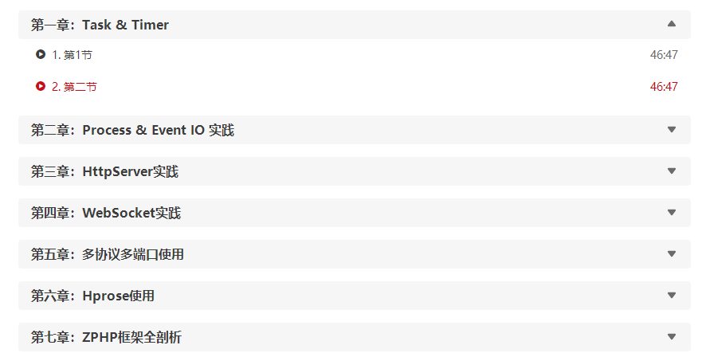

原文连接:https://www.cnblogs.com/heyue0117/p/11809210.html
这篇文章主要介绍了关于如何使用swoole加速laravel，有着一定的参考价值，现在分享给大家，有需要的朋友可以参考一下
再来复习一下吧，导致 php 慢的各种因素中解析性语言的特性可以说是罪魁祸首，再加上，每次请求完都释放请求时所加载的全部文件，因此也就显得更慢了。
后来我们有了 opcache，使用这个的话，请求时间大概会缩短到原来的一半，但是我们会发现其实花的时间看起来还是很多。
这是为什么呢？原因在于，opcache 只是省去了解析文件的时间，实际运行的时候，我们还是需要去把相同的代码又跑一遍，具体我们可以看下图：

我们假设一下，如果我们的代码跑了一遍，不释放的话，那么下次再跑的时候不就可以节省了这重复的时间？的确是的。
下面开始正题：
1、安装 laravel-swoole 扩展
|
1 |
|
2、swoole 扩展当然是必不可少的
|
1 |
|
需要在安装完 swoole 扩展之后加到 php.ini 中，不赘述
3、在 config/app.php 服务提供者数组添加该服务提供者：
|
1 |
|
4、现在，你可以执行以下的命令来启动 Swoole HTTP 服务。
|
1 |
|
ab 测试
测试环境：ubuntu 18.04，4核8线程 2.7～3.5GHz cpu，8G内存，120G SSD
测试结果：
ab参数：ab -n 1000 -c 100
我们发现 Time per request 是 2.512ms，当然，这只是一个简单的请求，不涉及数据库查询。总的来说，表现是要比 opcache 要好的，但这个毕竟是野路子，有多少坑我们不得而知，目前也不太了解是否有把这个用于生产环境的，但是这个思路其实真的很不错，最后期待一下 php 官方把这个作为研究方向

明确的学习思路能更高效的学习